The synApps softGlue module
Overview
The synApps softGlue module is intended to enable EPICS users and application developers to construct small,
simple, digital electronic circuits, and to connect those circuits to field wiring, all by writing
to EPICS PV's. Because the circuits are constructed and connected entirely via EPICS PV's, circuits
built using softGlue can be autosaved and restored, saved as text files (e.g., as a
BURT snapshot file), emailed
from one user to another, etc.
The name softGlue is intended to suggest glue electronics rendered in
software, where glue electronics means those little bits of digital circuitry needed to
connect two or more larger pieces of digital electronics into a working whole.
Requirements
To use softGlue, you must have the following hardware and software:
Hardware
- An IndustryPack (IP) carrier board.
- An Acromag IP-EP201 FPGA IP module.
- Some way of connecting the field I/O bits of the IP_EP201 module to your field
wiring.
Software
- The EPICS asyn module, version
4.6 or higher.
- The EPICS ipac module, version 2.11
or higher.
To use an earlier version, see "Build procedure" below.
- The EPICS calc module, version
2.8 or higher.
Any version that agrees with your version of EPICS base should work, though releases
earlier than 2.6.5 may require extra effort because they don't automatically adapt to absence of
the sscan module.
- The EPICS busy module, version
1.3 or higher.
This module is not required for any essential feature of softGlue, but it provides
a nice way for a hardware interrupt to effect the completion of an EPICS database operation.
Any version that agrees with your version of EPICS base should work; version 1.3 is nice only
because it contains an MEDM display for the busy record. If you don't have
a copy of this module, don't load softGlue_convenience.db, and don't include
softGlue_convenience_settings.req in your autosave request file.
You do not need to be able to program the IP-EP201 module. In the default implementation,
the FPGA content is programmed automatically into the module at IOC-boot time, via the IP bus. A
text file is included with softGlue for this purpose.
If you have a copy of Altera's "Quartus" software, you can load your own custom
FPGA content into the module, and use softGlue to talk to it. softGlue was
designed with this use in mind, though we don't yet have documentation on how
it's done.
Capabilities
Here are a few examples of the sorts of things that can be accomplished with softGlue:
- Send a trigger signal to a detector after every N steps of a stepper motor.
- Divide a high-frequency clock down for use as input to a 16-bit interval timer.
- Send a trigger to a detector 23 ms after sending a trigger to a shutter.
- Conditionally trigger the execution of an EPICS record on the change of state of
an external signal.
Implemented circuits
In this version of softGlue, the FPGA is programmed with the following circuit elements:
- 2 AND/NAND gates
- 2 OR/NOR gates
- 2 XOR/XNOR gates
- 2 D flip-flops
- 2 2-input/1-output multiplexers
- 2 1-input/2-output demultiplexers
- 2 32-bit Counters
- 2 16-bit preset counters
- 2 divide-by-N circuits
- 16 field-input bits
- 16 field-output bits
softGlue uses AND/NAND gates (etc.) as opposed to separate AND and NAND gates because we
guess that this choice will make more efficient use of FPGA resources, for the sorts of
circuits we imagine people building. (But make no mistake: softGlue is, nevertheless, an
extremely inefficient application of FPGA resources -- roughly on par with, say, using a
personal computer to write documentation.)
Installation and deployment
softGlue is a synApps module, so if you've used any other synApps module, you probably
already know how to install and deploy it. The important thing is that softGlue is pure
support: you are not expected to run an ioc directly with it, but instead to draw from
the module into your own ioc application.
Unlike most other synApps modules, however,
softGlue publishes the text files needed to boot an ioc in its db directory
(as an EPICS module really should, I suppose -- most synApps modules are nonstandard in
this respect), rather than in the softGlueApp/Db directory.
How to get the software
softGlue is available as part of synApps 5.5 and higher, as a tar file from
the softGlue web page,
or directly from the synApps subversion repository.
To export from the repository, run the following command:
svn export https://subversion.xor.aps.anl.gov/synApps/softGlue/tags/R1-1 softGlue-1-1
Version 1.1 has not yet been tagged.
Build procedure
Deploying to an ioc
To configure an EPICS ioc application to use softGlue, you must make modifications in the
following directories, and then rebuild the application:
User's Manual
Most of the essential user-interface information -- how to connect signals, what the display
elements mean, etc. -- is contained in the descriptions of the "User Menu" and "AND/NAND" sections
below. The remaining sections are mostly for completeness, though some circuit elements do require
further explanation, and the counter sections introduce new display elements for decimal numbers.
MEDM user interface
User Menu
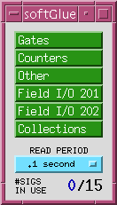
softGlueMenu.adl is the top-level display, which serves mostly to call up other displays.
CONNECTED is the period at which the values of connected signals are sampled for
display to the user;
UNCONNECTED is the period at which the values of unconnected signals are sampled for
display to the user.
Most softGlue displays are not interrupt driven. (That would be a disaster, because
inevitably some signals will change state at high frequency.) So, the states of inputs and outputs
must be sampled periodically, for display to the user. It seems wasteful to poll signals that aren't
being used, but we don't have very good information about which signals those are. A signal that has
been connected to some other signal is certainly being used, so it makes sense to
discriminate on that basis.
We've found that it's confusing for users if either of these poll periods are greater than
around 1 second. We've also found that polling everything at .1 second uses only a few
percent of an MVME2700 CPU.
AND/NAND
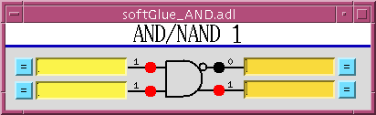
On the left are the inputs, each comprised of a yellow text-entry field, an "= button", a
number, and what's intended to look like an LED. On the right are essentially the same things, but
an output's text-entry field is a different color. The text-entry fields are used to connect
signals together, and the color difference is intended to remind you of the only rule governing
signal connections: if you connect two or more outputs together, those outputs won't work. (You
won't break anything, but the circuit won't be useful until you fix the error, because the states
of outputs connected together are undefined.)
The yellow text-entry box controls an input. You have five options:
- Leave empty. Inputs with empty text-entry boxes default to logic value 1.
- Enter a string that begins with a digit. This sets the input to a logic value: 0 if the
number is close to zero, 1 if it's not.
Allowing floats means you can drive softGlue inputs
with, say, calc records.
- Enter a string that begins with something other than a digit. This names the
signal, and connects it to all other signals with exactly the same name.
Note that you can't connect signals implemented in different FPGA modules using their
text-entry boxes. To accomplish this, you would have to connect the signals to field I/O and make a
physical connection.
- Enter the PV name of another signal's name into an empty text-entry box. This connects the
signals together.
Most likely you would do this using MEDM's Drag-And-Drop feature, by clicking the middle
mouse button in a signal's text-entry box, holding the button down while you move the mouse pointer
to another signal's text-entry box, releasing the button, and hitting <Enter> while the mouse
pointer is in the box. When softGlue sees the PVname of another signal associated with the same
FPGA module, it copies the source signal name to the drop signal name, connecting the signals
together.
- Enter a string that begins with something other than a digit, and that ends with .
This names the signal, connects it to all other signals with exactly the same name (ignoring
the trailing '
*'), and tells softGlue to run the signal through an inverter before applying it to the
input.
Not yet implemented.
Whatever option you choose, you can define at most fifteen different signal names.
Text-entry boxes for output signals won't accept names beginning with a number. You can't
control these signals directly; you can only connect them to other signals.
A signal's "= button" is used to show all other signals to which the signal is connected. Input
signals flash green boxes; output signals flash orange boxes. If you ever see two or more orange
boxes flashing at the same time, you have outputs connected together, and your circuit won't work.
The little red and black filled circles (LED's), and the numbers next to them, display the states
of their signals. These display elements are updated at the period specified in the softGlueMenu.adl
display.
The open circle ("bubble") in the top output's signal path indicated that the output is
inverted. You'll also see this bubble in some input signal paths. Any signal going through
a bubble is inverted.
| input1 | input2 | | output
|
|---|
| 0 | x | | 0
|
| x | 0 | | 0
|
| 1 | 1 | | 1
|
'x' means "either 0 or 1".
OR/NOR
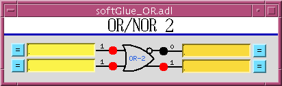
| input1 | input2 | | output
|
|---|
| 0 | 0 | | 0
|
| 1 | x | | 1
|
| x | 1 | | 1
|
XOR/XNOR
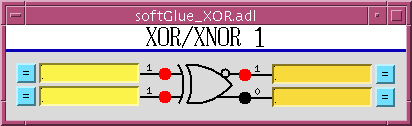
| input1 | input2 | | output
|
|---|
| 0 | 0 | | 0
|
| 0 | 1 | | 1
|
| 1 | 0 | | 1
|
| 1 | 1 | | 0
|
D FlipFlop
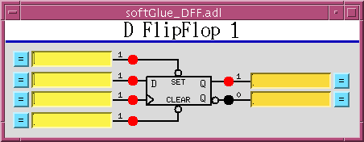
| SET | CLEAR | D | > (clock) | | Q
|
|---|
| 0 | 0 | x | x | | undefined
|
| 0 | 1 | x | x | | 1
|
| 1 | 0 | x | x | | 0
|
| 1 | 1 | any | rising edge | | D (value immediately before rising edge)
|
2-Input Multiplexer
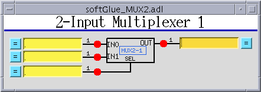
When SEL==0, OUT=IN0. When SEL==1, OUT=IN1.
2-Output Demultiplexer
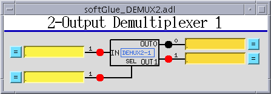
When SEL==0, OUT0=IN, and OUT1 is undefined. When
SEL==1, OUT1=IN, and OUT0 is undefined.
Up Counter (32-bit Counter)
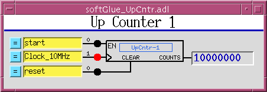
EN==1 enables the clock (">") input.
Down Counter (16-bit Preset Counter)
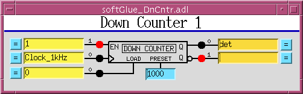
EN==1 enables the clock (">") input to decrement the counter value. When
LOAD==1 the counter is loaded with the value applied to the PRESET input. (Currently,
this is a 16-bit value, but the plan is to increase it to 32 bits.) While LOAD==1, the counter does
not count down. While LOAD==0 and EN==1, a rising edge at the clock input decrements the
counter. When the counter value reaches 0, the output Q goes to 1; the next rising
edge of the clock returns Q to 0 (regardless of the states of EN and
LOAD).
Divide By N
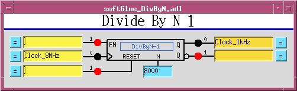
EN==1 enables the clock (">") input. Every N'th rising edge of the
clock drives Q to 1. The next rising edge returns Q to 0. While
RESET==1, the remaining number of rising edges before Q is driven to 1
is N.
Reset may need to be clocked to function?
8 MHz internal clock

An 8 MHz clock derived from the IndustryPack clock is available to softGlue
circuitry as a free standing output.
Field I/O
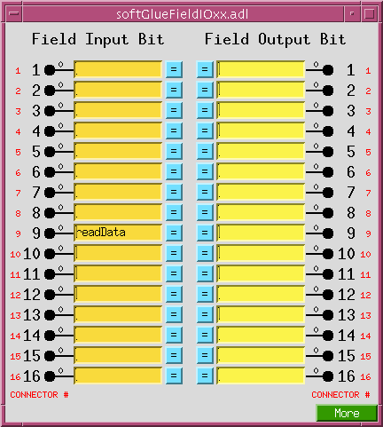
The signals in this display are the field inputs (pins 1-16 on the ribbon connector) and field
outputs (pins 17-32 on the ribbon connector).
Field I/O Interrupt support
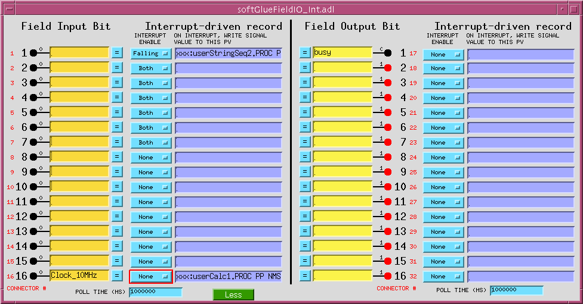
Field inputs and outputs are supported by two independent sets of binary input and output records:
- softGlue-supported records
- These records are part of a database that also includes signal-wiring fields
(the
softGlue_FPGAContent.db database); they are connected to
hardware via softGlue's asyn port (the port initialized by the function
initIP_EP201SingleRegisterPort()), and no interrupt support is
provided for them. They are polled at a rate determined by the
CONNECTED or UNCONNECTED menus on the
softGlueMenu.adl display.
- non-softGlue-supported records
- These optional records are loaded separately from the records described
above (they are loaded by the
softGlue_FPGAInt.db database); they
are connected to hardware via the asyn port initialized by the function
initIP_EP201(), and they can be interrupt driven. They are also
polled periodically. The polling period's initial value is specified as an
argument to initIP_EP201(), and it can be modified by the user
via the POLL TIME (MS) text entries on the
softGlueFieldIO_Int.adl display. The polling periods for inputs
and outputs are specified separately.
All
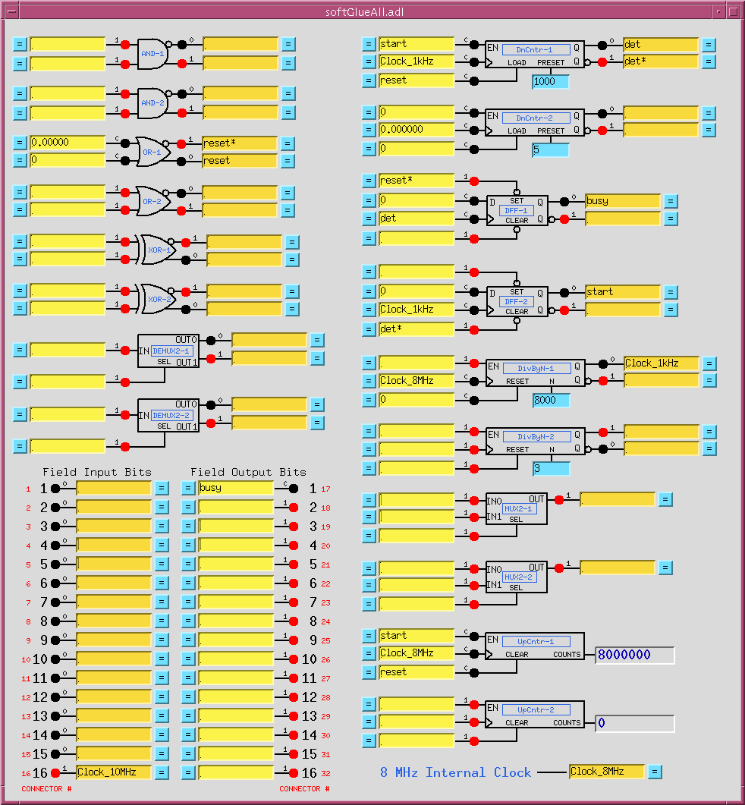
description
Convenience
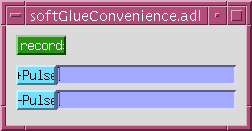
description
BusyRecord

description
Example circuits
motor-pulse gate
motor-pulse accel-time gate
pulse stretcher
Implementation
softGlue's FPGA content is of standard digital circuitry connected to
interface elements that are of three types:
- Input
- An input is essentially a multiplexer controlled by a register that softGlue can write to
and read. Inputs 1-15 of all input multiplexers are connected together to form a 15-line bus, so that
all inputs with the same multiplexer address are connected together. Input 0 of the multiplexer is
special: it connects to a bit of the control register, instead of to a bus line. A second register
bit controls whether or not the multiplexer output is routed through an inverter before connecting to
the payload digital circuit element input.
- Output
- output, routed via a demultiplexer to any of 15 bus lines. No connection
is made to the demultiplexer output selected by the address 0.
- 16-bit register
- integer value written by EPICS to a parameter register with a fixed connection
to a specific device instance.
The following notes have not been integrated into the documentation yet.
They are included for completeness.
========================================================================
Deployment considerations
We need to ensure that the software agrees with the FPGA programming. Software
dependence on FPGA content is of two kinds:
1) Dependence on the register-set with which SOPC components are implemented.
There are two different register sets currently in use: Marty's original
register set (called 'fieldIO_registerSet' in comments within drvIP_EP201.c),
and Kurt's register set (called 'single 16-bit register' -- a misnomer,
because there are several registers, but thus far only one register is used.)
This dependence is restricted to the driver code, drvIP_EP201.c.
2) Dependence on the user circuits attached to 'single 16-bit register' SOPC
components. For example, the version 1.1 implementation of softGlue has several
AND/NAND gates, several OR/NOR gates, some counters, etc., controlled by
'single 16-bit register' components.
This dependence is restricted to the database, autosave-request file, and
MEDM displays, which should have an analog for each 'single 16-bit register'
component, and should know which component address corresponds with which
user circuit, and with which part of the user circuit.
For example, the inverting output of AND/NAND gate #1 is associated by
address with a 'single 16-bit register' component.
------------------------------------------------------------------------------
Programming the FPGA via the IP bus.
The IP-EP201 board has to be prepared for this by moving the DIP jumper to
"IP BUS".
The hex file to be loaded is included in the softGlueApp/Db directory.
It was prepared as follows, in Quartus, according to an email from Marty Smith:
1. Under programming type select the Hexadecimal file format for Intel
2. Select your file name
3. Add your .sof file
4. Select the sof file and hit the properties button
5. Select the compression box
6. Make sure that you have selected 1-bit Passive Serial above for the mode
7. Select the options button under programming file type
make sure that you have a start address of 0x0 and that the count up
radio button is selected
8. Generate your file
From Marty Smith's spreadsheet: Field I/O registers
Acromag FPGA Field I/O Quartus SOPC Interface using DIO16 Module
base address 0x800000
| Address Offset | Function | Description | Read/Write
|
|---|
| 0 | Control/Status | Field-I/O direction, IRQ status | Read/Write
|
| 1 | Field I/O Write Data | Write Field I/O ONLY when dir = 1 | Read/Write
|
| 2 | Field I/O Read Data | Read Field I/O ONLY when dir = 0 | Read
|
| 3 | Rising IRQ Status Bits | Which Bits are causing interrupt from field I/O on transition to 1 | Read/Write
|
| 4 | Rising IRQ Intterupt Enable Bits | Which Rising edge bits have IRQ Enabled | Read/Write
|
| 5 | Falling IRQ Status Bits | Which bits are causing interrupt from field I/O on transition to 0 | Read/Write
|
| 6 | Falling IRQ Interrupt enable bits | Which bits have falling IRQ enabled | Read/Write
|
| Bit | Function | Value | Description | Reg type
|
|---|
| 0 | Field I/O Direction Lower 8-Bits | 0=Input, 1=Output | Sets direction for field I/O Lower 8-Bits | Control/Status
|
| 1 | | 0 | | Control/Status
|
| 2 | | 0 | | Control/Status
|
| 3 | | 0 | | Control/Status
|
| 4 | | 0 | | Control/Status
|
| 5 | Falling Edge IRQ Present | Lower 8-Bits | Set bit to 1 for Falling Edge INT | Control/Status
|
| 6 | Rising Edge IRQ Present | Lower 8-Bits | Set bit to 1 for Rising Edge INT | Control/Status
|
| 7 | Lower 8-bits IRQ Present | | | Control/Status
|
| 8 | Field I/O Direction Upper 8-Bits | 0=Input, 1=Output | Sets direction for field I/O Upper 8-Bits | Control/Status
|
| 9 | | | | Control/Status
|
| 10 | | | | Control/Status
|
| 11 | | | | Control/Status
|
| 12 | | | | Control/Status
|
| 13 | Falling Edge IRQ Present Upper 8-Bits | | | Control/Status
|
| 14 | Rising Edge IRQ Present Upper 8-Bits | | | Control/Status
|
| 15 | Upper 8-bits IRQ Present | | | Control/Status
|
Credits
The essential enabling work underlying softGlue is Eric Norum's IndustryPack Bridge. David Kline engineered a
proof-of-principle implementation working from another of Eric's bus-interface solutions, for a
non-VME architecture. Marty Smith wrote a driver to talk to custom FPGA content interfaced to
Eric's IndustryPack Bridge. Marty Smith and Kurt Goetze implemented the FPGA content included
with softGlue, and Tim Mooney extended Marty's driver, wrote some device support, and did the
EPICS-application stuff.
Suggestions and Comments to:
Tim Mooney : (mooney@aps.anl.gov)